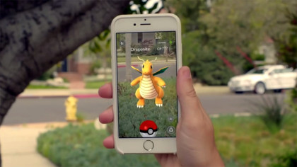

Augmented Reality (EJ)
Augmented reality is the overlaying of computer generated data into reality using technology to create digitized simulations. These can usually be found in applications found on smartphones as well as programs that project such data from its hardware. Using Augmented reality, users can apply certain elements that would normally not be found at the base of what is shown in a natural environment or situations and preview what they are trying to visualize or create in the real world. These are helpful for users who are part of many industries that require them to visualize what they want to achieve such as in Architecture, Interior designing, the gaming industry, and more. Using augmented reality, they can find a starting point to their projects and give their targets a feel of what they can expect for them. However, before generating what programmers want, they must consider different elements that may apply to the user and the context of what they must project when creating an interface for the user. Are the users going to be using this program in public or in private? Will it improve the user experience? What kind of scenario must they consider for the AR program to work? How will they make sure that their sensors will work properly?

Then, there’s the purpose of the program. Say they’re used for visual arts. For example, architects typically design buildings first on paper or digitally. Once they’ve achieved their initial design, they use augmented reality to create a sample 3D preview of that unit that they can touch upon and make improvements should any part of their design prove unnecessary or are in need of better progress. The same can be said about interior designing. Say a condo unit has been completed, but it’s bare and has no furniture. Interior designers can use AR technology to place 3d furniture unto the empty space and visualize what can be done for each room. We can also take that a step further. What if we want the program to be interactive as well? Video games are a common example that use Interactive Augmented Reality. Programmers use these to further enhance a player’s experience by using interactive data that users can personally interact with.. A notable example for this in the game Pokemon Go which allows players to find Pokemon as they roam around and capture them. The catch is these Pokemon, who are normally found in grassland areas in mainline titles of the game, will appear before you using your camera and using this, you can catch them with virtual Pokeballs that you throw at them. Captured Pokemon can then be called out and played with similar to a virtual pet and even take pictures with. This gives players who love the franchise the feeling that they themselves are actual trainers with actual Pokemon to take care of. Augmented Reality can sometimes be confused with Virtual Reality. But there is a stark difference to what these two are.
As stated earlier, Augmented Reality simply takes computer-generated data and then renders and overlays them into a natural setting using devices such as phone cameras.. Virtual reality, on the other hand, is a full on simulation that can be used to give the user a different perception of reality based on what information is being processed into the devices they are using to view and experience the simulation. Notable examples are VR headsets for consoles such as the Playstation 4. The hardware components that are required for augmented reality to function in devices are processors, display, sensors, and input devices. Devices that commonly have these components are modern smartphones and tablets. Often, they rely on cameras and microelectromechanical sensors that allow AR applications to process. Other such devices that commonly use Augmented Reality are Projectors and Monitors.
Currently, the state of Augmented Reality is at a great development stage. From being just a concept in science-fiction, technology has come a long way and has helped UX designers create the means to project data into reality. Currently, people are able to enjoy AR in different parts of their daily lives and development only continues to grow. PC Monitors aren’t the only things that can project data now. More gadgets can display data from AR programs via devices such as glasses and smart phones. It also now incorporates the use of sensors, allowing us to use common security measures to our devices such as touch recognition, eye tracking, and speech recognition. Furthermore, development of AR software continues to grow to take advantage of current day hardware capabilities that vastly outpowers what previous generations of technology had to offer. Nearly every industrial sector continues to research the use of AR to expand their uses beyond simple convenience. It’s gotten to the point where AR can help aid the military, the medical field, and education. Given what can be done now, we’re confident to say that Augmented Reality will only continue to evolve along with the already advancing technology that encompasses our world and prove crucial to the advancement of human society. Within the next three years, with what we currently have, Augmented Reality could come to the point where it will even create breakthroughs for the industries that support it. Safe military operations with AR guided GPS and target tracking, faster research to finding cures, and support for those in the visual arts. The world has come to the point where these old ideas that only seemed possible in the movies now seem doable. We have state of the art security that require registered recognition, video games that were created to seem so lifelike compared to blocky and crude animations that were found a decade ago, and applications that allow us to create or add in elements that cannot be found in real life. Most of these advanced features can even be found simply in our phones. It isn’t farfetched to say that with smartphones on us at all times, Augmented Reality is practically part of our bodies.

This development can spark a positive improvement in people's lives. Many of the breakthroughs done to further any of the technology we currently have isn’t just to create something new. It’s to make the lives of everyone easier. With smartphones in our lives, many of the stuff like quicker communication, scheduling, online shopping, and others have become much simpler compared to times where we’d need to log into a computer or manually do things that the phone can do for you now. Advancing what we currently have for Augmented Reality can even possibly turn data into reality in some form. Those industries that are being aided by Augmented Reality will surely make their lives far easier by helping them do their jobs at quicker and more efficient rates. It isn’t to say that it’s not without drawbacks. Maybe the advancement could prove too good and lesser people will be needed to operate. It could even replace people from outright doing their jobs. It could also cause more competition in the market as similar systems could be created or more industries will fight to obtain the better tech. For us, as IT students, we view this change as good as with every step that the IT industry takes in developing these software and programs, the more we get to learn and use what we know to help the industry surpass their current limitations. Hopefully, this continued advancement will help us make our mark in the world. The better this technology for us, the better we can help improve people's lives. After all, if what we offer to this industry does help spark an impact to create better Augmented Reality in our lives, we’ll be effectively helping our family and friends find a way to enjoy easier and happy lives. What more could we ask for?